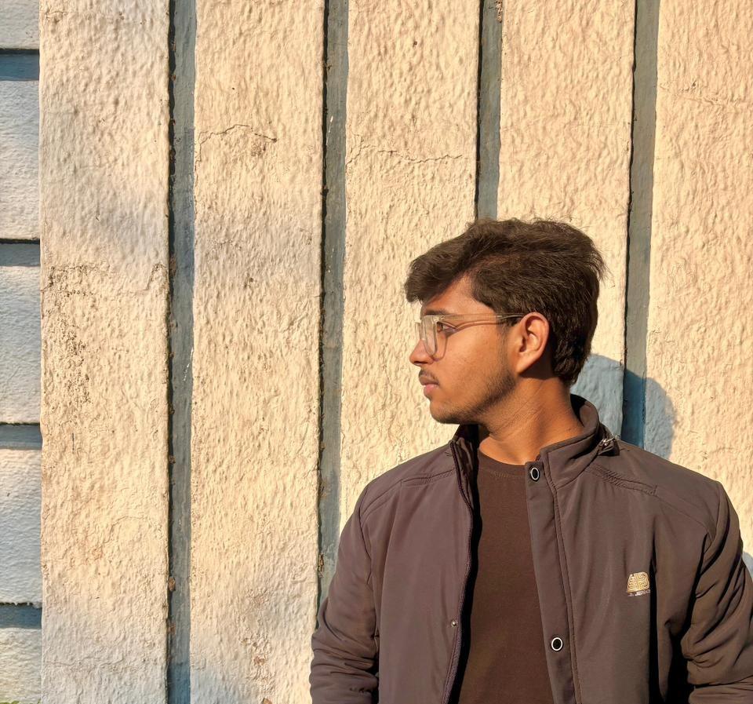
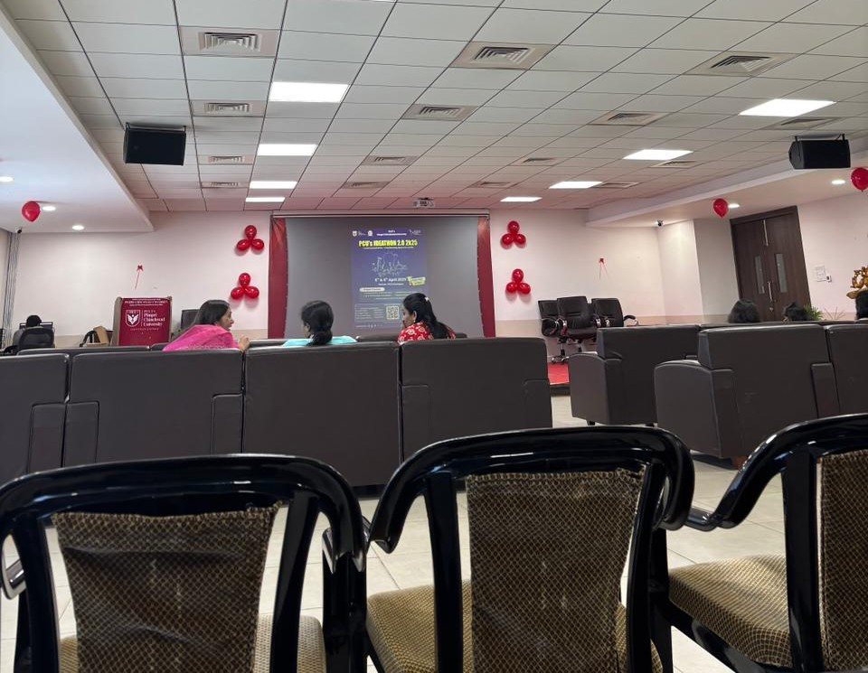
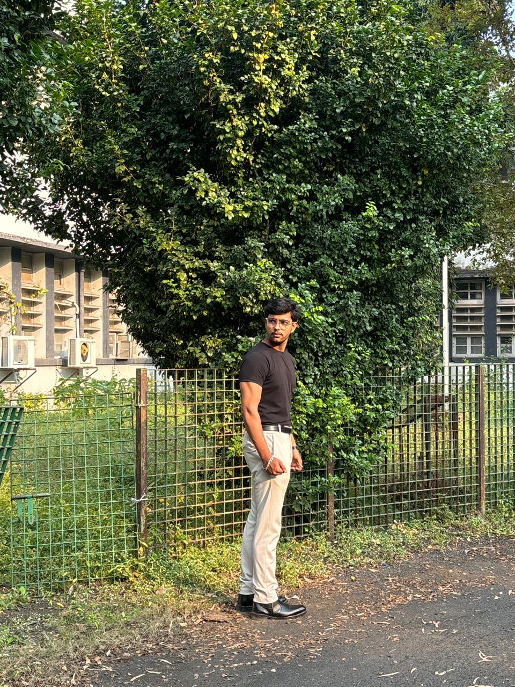
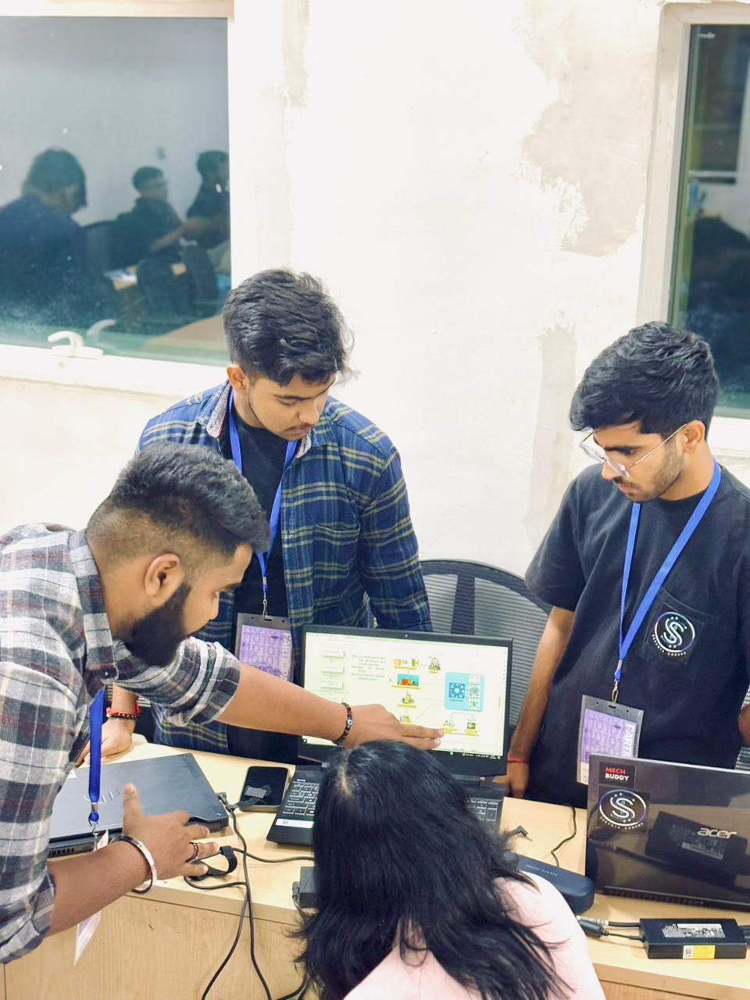
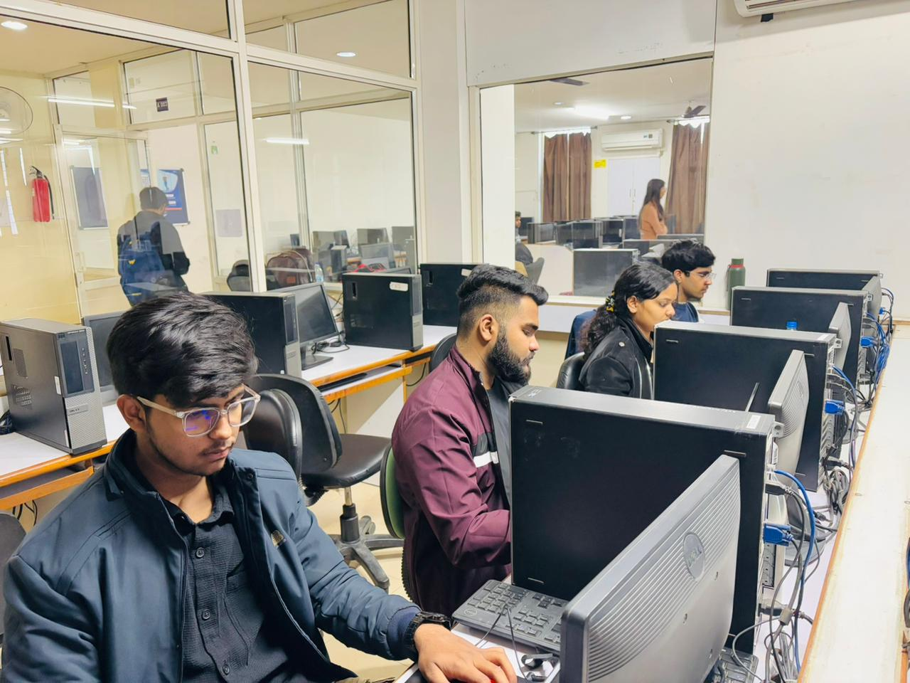

Intelligence
ML, NLP and GenAI systems that turn raw signals into smarter decisions.
Available for ambitious ideas · 2026
Hey, I’m Anand Vaidya — an AI/ML student, data analyst, and creative developer building useful things with equal parts logic and taste.
ANAND VAIDYA
BUILDER / ANALYST / ATHLETE
( 001 )
THE SHORT VERSION
I’m the person who enjoys an untidy dataset, a clean UI, and the moment an idea finally clicks. From machine learning and analytics to full-stack work, content, and fitness — I like learning in public and making work that feels alive.
See my toolkitML, NLP and GenAI systems that turn raw signals into smarter decisions.
Data stories and dashboards that make the next move obvious.
Digital products with thoughtful flows, memorable detail and real personality.
( 002 )
SELECTED WORK
A small collection of things
I’ve designed, analysed & built.
( 003 )
DATA ANALYST MODE
Finding the why
behind the numbers.
zoom out. find the pattern.
I use exploratory analysis, visualisation and dashboard thinking to turn messy information into insights people can actually use.
( 004 )
MACHINE LEARNING LAB
Teaching systems
to see the signal.
From classification and prediction to natural-language experiments, I build practical ML work with a focus on understanding the data first.
( 005 )
THE TOOLKIT
Always in beta. Always making room for one more rabbit hole.
( 006 )
THE JOURNEY SO FAR
HARTALKERS INNOVATION · DATA ANALYTICS
Worked as a Data Analyst Intern. Currently exploring new opportunities, learning LLMs and going deeper into a fresh tech stack.

IDEATHON PCU · PUNE
Recognised for an innovative concept and a user experience designed to stand out.

STARIAL · WEB DEVELOPMENT
Built and contributed to full-stack web work during a five-month internship.

IICH · MUJ
Reached the finalist stage at IICH, MUJ, with ISRO representatives serving as judges.

I LOVE HACKATHON · INDORE
Tested ideas under pressure, presented solutions and made the final rounds among hundreds of teams.
